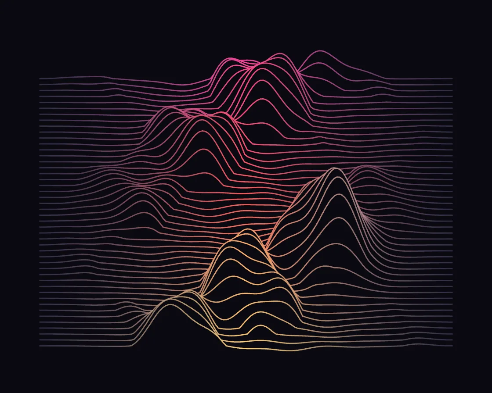

Wave lines
Wave lines is a Canvas effect: harmonics phase-shifted line to line; hidden-line ridges drift diagonally. One plain JavaScript file with no dependencies; add it with npx motion-library add wave-lines.

Open it live, tune it and copy the code
What is Wave lines?
A stack of hairlines rises into ridges that travel diagonally down and flatten again. The pointer pinches the lines up into a glowing peak.
How does Wave lines work?
Each line sums sine harmonics whose phase steps per line at different rates; filling below each line before stroking hides the ridges behind.
How do I add Wave lines to my website?
- In your project folder, run
npx motion-library add wave-lines. It writesanimations/wave-lines.js. Needs Node 18 or newer. - Import it and call it with a container element that has a size:
import fx from './animations/wave-lines.js'; const stop = fx(document.querySelector('#hero')); - Call
stop()to clean up, for example when a component unmounts.
Every setting below is also a flag, so you can install it already tuned: npx motion-library add wave-lines --lines 90.
What settings can I tweak?
| Setting | Flag | Default | Range | Step |
|---|---|---|---|---|
| Lines | --lines | 46 | 10 to 90 | 1 |
| Harmonics | --harmonics | 4 | 1 to 5 | 1 |
| Speed | --speed | 1 | 0 to 3 | 0.05 |
| Height | --height | 1 | 0.2 to 2.5 | 0.05 |
Specifications
- Renderer
- Canvas 2D
- Category
- Generative & math
- Dependencies
- None
- File size
- 6.2 KB, unminified
- Interactive
- Yes: it responds to the pointer
- Reduced motion
- Respects prefers-reduced-motion
- Licence
- MIT-0: use it anywhere, no credit needed
Source code
// Wave lines: a stack of horizontal lines, each lifted by the same few sine harmonics. Every harmonic is shifted in
// phase by its own step from one line to the next, so down the stack the harmonics slide past each other: crests
// build where they agree and flatten where they cancel, and the ridges travel diagonally through the stack. Each
// line is filled below in the background colour, so nearer ridges hide the ones behind (hidden-line drawing).
// The pointer (or an idle ghost) pinches the sheet up into a peak that rises to meet it; the ridges behind it hide.
const PARAMS = { lines: 46, harmonics: 4, speed: 1, height: 1 };
export default function (stage) {
const canvas = document.createElement('canvas');
canvas.style.cssText = 'position:absolute;inset:0;width:100%;height:100%;display:block';
stage.append(canvas);
const ctx = canvas.getContext('2d');
const reduce = matchMedia('(prefers-reduced-motion: reduce)').matches;
let W = 0, H = 0, D = 1;
const resize = () => { D = Math.min(devicePixelRatio, 2); W = stage.clientWidth || 1; H = stage.clientHeight || 1; canvas.width = W * D | 0; canvas.height = H * D | 0; };
const ro = new ResizeObserver(resize); ro.observe(stage); resize();
// per harmonic: spatial frequency, amplitude, phase step between lines, drift speed
const HARM = [[1, 1, .21, .55], [2.03, .55, -.37, -.8], [3.1, .32, .53, 1.1], [5.2, .17, -.71, -1.6], [7.9, .1, .9, 2.1]];
const BG = '#0a0910';
// the pointer, in CSS pixels of the stage; an idle ghost takes over when nobody is pointing
const ghostX = g => W * (0.5 + 0.26 * Math.sin(g * 0.33 + 1.39));
const ghostY = g => H * (0.44 + 0.08 * Math.sin(g * 0.51 + 1.3));
let gt = reduce ? 3 : 0, tx = ghostX(gt), ty = ghostY(gt), mx = tx, my = ty, ma = 0, lastMove = -1e9, last = performance.now();
const onMove = e => { const b = canvas.getBoundingClientRect(); tx = e.clientX - b.left; ty = e.clientY - b.top; lastMove = performance.now(); };
const onLeave = () => { lastMove = -1e9; };
canvas.addEventListener('pointermove', onMove); canvas.addEventListener('pointerdown', onMove); canvas.addEventListener('pointerleave', onLeave);
let ys = new Float32Array(0);
let raf; const t0 = performance.now();
function frame(now) {
const t = reduce ? 2 : (now - t0) / 1000 * PARAMS.speed;
const dt = Math.min(0.05, (now - last) / 1000); last = now;
const live = now - lastMove < 2500;
if (!reduce) gt += dt;
if (!live) { tx = ghostX(gt); ty = ghostY(gt); }
const kk = 1 - Math.exp(-dt * (live ? 14 : 3));
mx += (tx - mx) * kk; my += (ty - my) * kk; ma += ((live ? 1 : 0) - ma) * (1 - Math.exp(-dt * 4));
ctx.setTransform(D, 0, 0, D, 0, 0);
ctx.fillStyle = BG; ctx.fillRect(0, 0, W, H);
const n = Math.round(PARAMS.lines), nh = Math.max(1, Math.min(HARM.length, Math.round(PARAMS.harmonics)));
const mx0 = W * .08, top = H * .2, gap = (H * .88 - top) / (n - 1), amp = gap * 5.5 * PARAMS.height;
const steps = Math.ceil((W - 2 * mx0) / 3);
if (ys.length < steps + 1) ys = new Float32Array(steps + 1);
// the pinch: a Gaussian mountain under the sheet, centred on the row whose lifted crest lands on the pointer
// (near the front or back of the stack, the end row is pinched instead, as far as it will stretch)
const yc = Math.min(top + (n - 1) * gap, Math.max(top, my + amp * (2.2 + 0.8 * ma)));
const hb = Math.min(amp * 3.4, Math.max(amp * .8, yc - my)), rx = Math.max(30, W * .06), ry = gap * 4.5;
ctx.lineWidth = 1.4; ctx.lineJoin = 'round';
for (let i = 0; i < n; i++) {
const y0 = top + i * gap, depth = i / (n - 1);
const dy = (y0 - yc) / ry, row = hb * Math.exp(-dy * dy);
ctx.beginPath();
for (let s = 0; s <= steps; s++) {
const u = s / steps, x = mx0 + u * (W - 2 * mx0), su = Math.sin(Math.PI * u);
const env = Math.pow(su, 2.2); // calm at the edges, alive in the middle
let v = 0;
for (let k = 0; k < nh; k++) { const [f, a, dp, sp] = HARM[k]; v += a * Math.sin(u * f * 9.4 + i * dp + t * sp + k * 1.7); }
const lift = Math.max(0, v) * .85 + v * .15; // mostly upward, a little dip
const dx = (x - mx) / rx, pinch = row > .3 ? row * Math.sqrt(su) * Math.exp(-dx * dx) : 0;
const y = y0 - env * lift * amp - pinch;
ys[s] = y; s ? ctx.lineTo(x, y) : ctx.moveTo(x, y);
}
// hide whatever lies behind this ridge, then draw the ridge itself
ctx.lineTo(W - mx0, H + 2); ctx.lineTo(mx0, H + 2); ctx.closePath();
ctx.fillStyle = BG; ctx.fill();
const g = ctx.createLinearGradient(mx0, 0, W - mx0, 0);
const hot = `hsl(${(330 + depth * 70) % 360} 95% ${62 + depth * 10}%)`;
g.addColorStop(0, 'rgba(120,110,160,.35)'); g.addColorStop(.5, hot); g.addColorStop(1, 'rgba(120,110,160,.35)');
ctx.strokeStyle = g; ctx.beginPath(); // stroke the ridge alone, not the fill’s sides
for (let s = 0; s <= steps; s++) { const x = mx0 + s / steps * (W - 2 * mx0); s ? ctx.lineTo(x, ys[s]) : ctx.moveTo(x, ys[s]); }
ctx.stroke();
if (row > hb * .12) { // the pinched stretch of this line runs white-hot
const xa = mx - 2.4 * rx, xb = mx + 2.4 * rx;
const sa = Math.max(0, Math.floor((xa - mx0) / (W - 2 * mx0) * steps)), sb = Math.min(steps, Math.ceil((xb - mx0) / (W - 2 * mx0) * steps));
if (sb > sa) {
const hg = ctx.createLinearGradient(xa, 0, xb, 0), al = (.25 + .5 * ma) * row / hb;
hg.addColorStop(0, 'rgba(255,236,214,0)'); hg.addColorStop(.5, `rgba(255,236,214,${al})`); hg.addColorStop(1, 'rgba(255,236,214,0)');
ctx.strokeStyle = hg; ctx.beginPath();
for (let s = sa; s <= sb; s++) { const x = mx0 + s / steps * (W - 2 * mx0); s > sa ? ctx.lineTo(x, ys[s]) : ctx.moveTo(x, ys[s]); }
ctx.stroke();
}
}
}
raf = requestAnimationFrame(frame);
}
raf = requestAnimationFrame(frame);
return () => { cancelAnimationFrame(raf); ro.disconnect(); canvas.removeEventListener('pointermove', onMove); canvas.removeEventListener('pointerdown', onMove); canvas.removeEventListener('pointerleave', onLeave); canvas.remove(); };
}